Preparing Geodata
Objective
This module explains how to prepare topographical and land-use geodata in ArcGIS Pro so it can be correctly used for predictions in CE Express or CE Desktop for ArcGIS Pro. The focus is on producing rasters that are geometrically correct, consistently referenced, and compliant with CE input requirements.
By the end of this exercise, participants will be able to: - Understand which geodata layers are mandatory and optional for CE Express - Prepare a Digital Terrain Model (DTM) raster suitable for predictions - Mosaic, project, and standardize raster datasets in ArcGIS Pro - Prepare clutter class and clutter height rasters aligned with the DTM - Export final rasters with correct naming, resolution, extent, and data type
Required and Optional Geodata Layers
Mandatory. Digital terrain model (DTM) grid
The Digital Terrain Model (DTM) represents the Earth's ground level above sea level. Each raster pixel has its height value. Freely available data can be download from here
The raster name must be elevation.tif
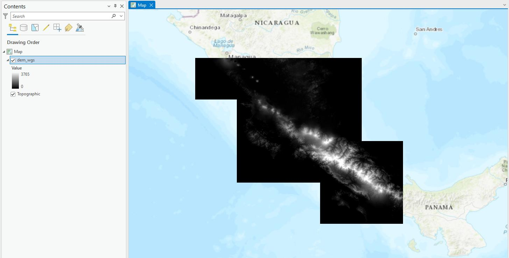
Optional. Clutter height grid
The Obstacle height (building, vegetation, etc) grid represents the objects on the ground with their height above the DTM grid. The raster name must be clutterHeight.tif
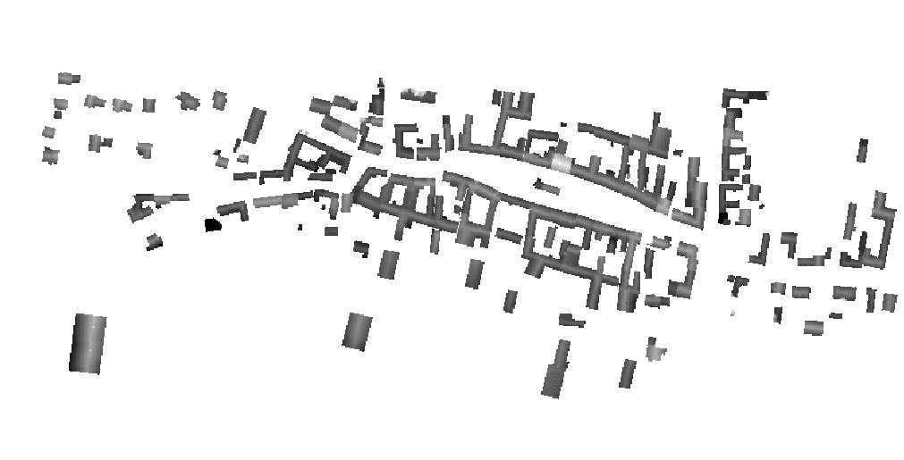
Optional. Clutter class grid
A Clutter class grid represents land use types. The data can be downloaded from here: Livingatlas ArcGIS Sentinel-2 Land Use
Possible land use types: - Water - Tress - Flooded vegetation - Crops - Built area - Snow/Ice - Rangeland
The clutter must be named clutterClasses.tif.
Exercise
Step 1 – Opening the ArcGIS Pro Project
- Navigate to: C:\CE_Course\PreparingGeodata\Project
- Open the ArcGIS Pro project file: Project.aprx
This project contains predefined folder structures and basemaps used throughout the exercise.
Step 2 – Preparing the Digital Terrain Model (DTM)
Adding Source DTM Tiles
- Click Add Data.
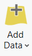
- Navigate to: C:\CE_Course\PreparingGeodata\Initial\DTM
- Select the following files:
- ASTGTMV003_N54E024_dem.tif
- ASTGTMV003_N54E025_dem.tif
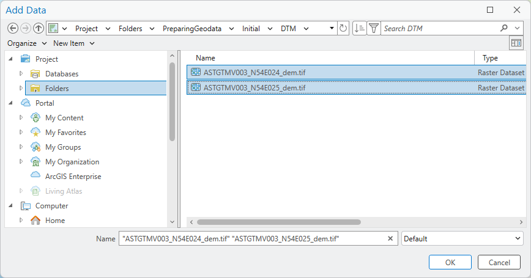
- Click OK.
These files represent adjacent DTM tiles and must be merged into a single raster.
Mosaic to New Raster
- Open Geoprocessing from the View tab.
- In Find Tools, search for Mosaic to New Raster.
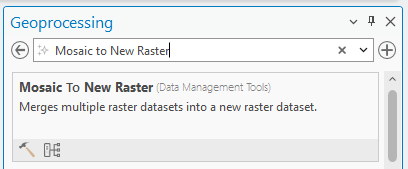
- Configure the tool as shown in the training reference:
- Input Rasters: both ASTER tiles
- Output location: calculation directory
- Output raster name: temporary DTM
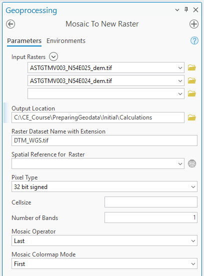
- Click Run.
This creates a single continuous elevation raster.
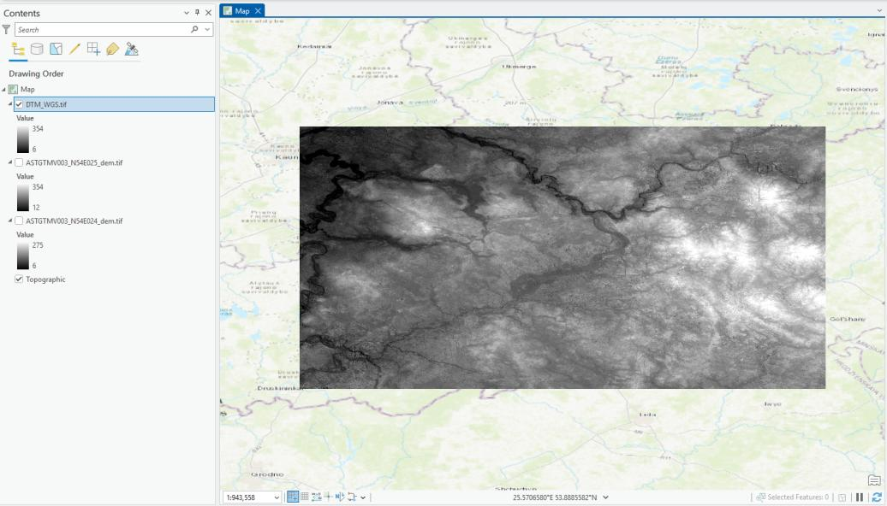
Project raster
Projecting the Digital Terrain Model (DTM) is a critical GIS step that ensures the elevation data can be correctly interpreted and used by CE. Prediction engines require all geodata to be in a projected coordinate system so that distances, angles, and areas are calculated accurately.
Raster datasets provided in geographic coordinate systems (latitude/longitude) are not suitable for prediction calculations without reprojection, because their units are angular rather than linear.
Selecting the Correct Coordinate System
Before projecting, determine the most appropriate projected coordinate system: - Local / National grid systems are preferred when available (e.g. LKS 1994 Lithuania TM) - WGS 1984 UTM zones are suitable when national systems are not available
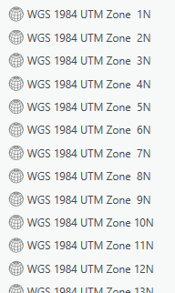
When using UTM: - Select the zone covering the majority of the study area - Avoid splitting datasets across multiple UTM zones
Which zone should be used can be checked https://hub.arcgis.com/datasets/esri::world-utm-grid/explore
Consistency across all geodata layers is mandatory.
Running the Project Raster Tool
- Open Geoprocessing from the View tab.
- Search for Project Raster.
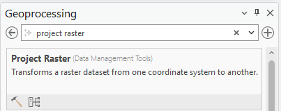
Configure the tool as follows: - Input raster: DTM_WGS.tif - Output Raster Dataset: C:\CE_Course\PreparingGeodata\Initial\Calculations\DTM_UTM.tif - LKS_1994_Lithuania_TM - Cell size: - X: 25 - Y: 25
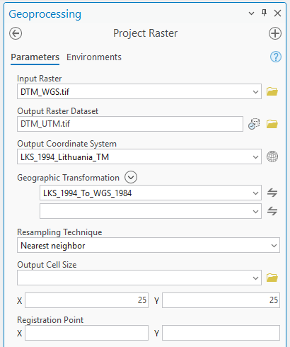
Run calculations.
Finalizing the Elevation Raster
- Open Copy Raster.
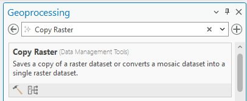
- Define:
- Input raster: projected DTM
- Output raster: elevation.tif
- Pixel Type: 16-bit signed, 32-bit signed, or 32-bit float
- NoData value: -9999
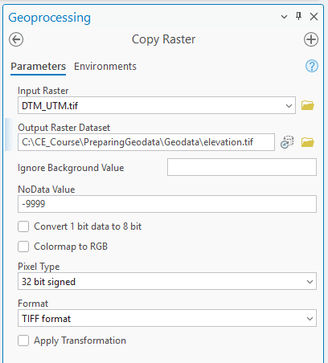
- Click Run.
- Remove all other layers except:
- elevation.tif
- Topographic basemap
The DTM is now ready for CE Express.
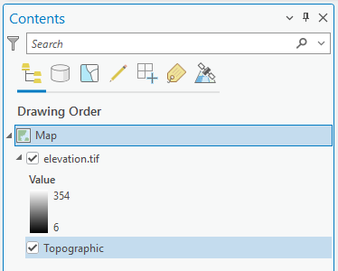
Step 3 – Preparing Clutter Class Raster
The clutter class raster is downloaded from here.
Adding Clutter Class Data
- Click Add Data.
- Navigate to: C:\CE_Course\PreparingGeodata\Initial\Clutter
- Select: 35U_20240101-20241231.tif
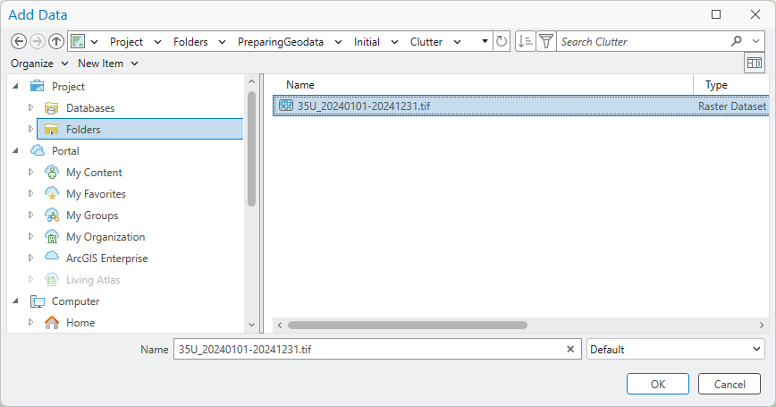
- Click OK.
This raster covers a much larger area than the DTM.
Projecting and Clipping Clutter Classes
Clutter class rasters must match the DTM in all spatial aspects. Any mismatch can lead to incorrect obstruction modeling and unstable prediction results.
Proper projection and clipping ensures: - Correct spatial alignment between terrain and clutter - One-to-one pixel correspondence across rasters - Consistent distance and area calculations - Reliable application of clutter loss models
Reprojecting the Clutter Class Raster
- Open Geoprocessing in ArcGIS Pro.
- Search for Project Raster.
Configure the tool as follows: - Input Raster: Original clutter class dataset - Output Raster: C:\CE_Course\PreparingGeodata\Initial\Calculations\clutter_UTM.tif - Output Coordinate System: Same projected system used for elevation.tif
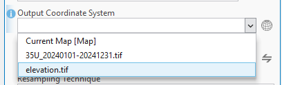
Enforcing Spatial Alignment (Environment Settings)
To ensure perfect alignment with the DTM, configure the Environment settings before running the tool:
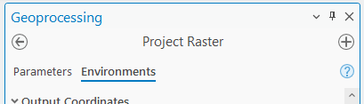
- Processing Extent: Same as elevation.tif
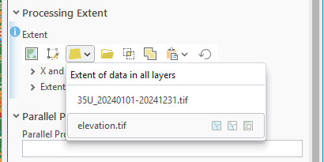
- Snap Raster: elevation.tif
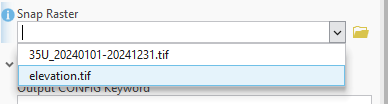
These settings force ArcGIS Pro to: - Clip the raster to the exact DTM extent - Align pixel boundaries exactly with the DTM grid
Press Run.
Finalizing the Clutter Class Raster
- Open Copy Raster.
- Configure:
- Output name: clutterClasses.tif
- Pixel Type: 32-bit signed integer
- NoData value: -9999
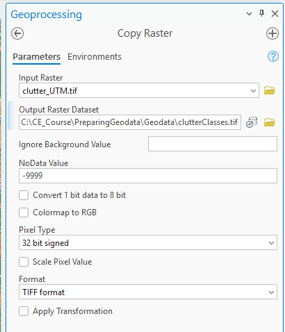
- Click Run.
- Remove all intermediate clutter rasters from the map.
The clutter class raster is now fully prepared and compliant with CE requirements.